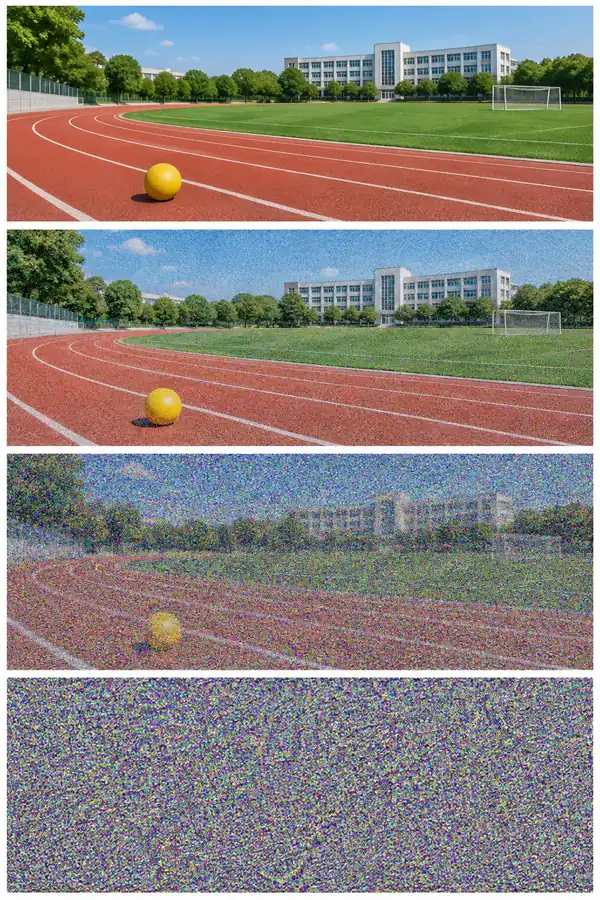

一份文档，内含原图A、修改图B、两条完整提示词、改动项和选择理由。图片在文档中上下排列。
06_技能节配图对比_姓名.docx
第一章｜AIGC 理论基础 · 第 6 次课 · 2 学时
给校园技能节设计配图：说清想画什么，观察生成差异，再用证据选出可用版本。
上一课知识回顾待补。
板块 ② 本节你将学会
一份文档，内含原图A、修改图B、两条完整提示词、改动项和选择理由。图片在文档中上下排列。
06_技能节配图对比_姓名.docx
原图、提示词是制作过程材料；最后合在这一份文档里提交，不额外交思维导图。快的同学可以做一次重复生成，作为文档中的选做记录。
假设你要一张“学生在操场展示工具”的配图。你把要求写给 AI，它就能尝试画出来。这节课先弄懂三件事：什么是图片里的噪声、画面怎样逐步形成、怎样把要求说清楚。不需要先记一串技术名称。
概念： 这里的“噪声”不是耳朵听到的吵闹声，而是图片中杂乱、没有明确规律的干扰。先把它想成画面上乱七八糟的黑白点或彩色点：点越多，原来的内容就越难认出来。
例子： 想象一张清楚的操场照片。先在上面撒少量彩色小点，你还能看出学生和跑道；再撒很多很多点，就越来越难看清；如果整个画面都是随机小点，看起来就像一片“花屏”。这些小点帮助我们直观理解图片噪声。
记住： 图片噪声可以用眼睛看，不是用耳朵听。“随机”就是这些点没有按某个固定图案排列。

看图说一句： 从哪一幅开始，你觉得球的位置不好找了？用“杂点越多，……”说出你的观察。
这组图只帮助理解“噪声会干扰画面”。不能把它倒过来当成 AI 必然画出这座操场的过程；随机噪点里并没有预先藏着这张图。
概念： 以 Stable Diffusion 这类绘图模型为例：AI 在学习阶段接触许多图片和文字，也练习怎样处理被噪声干扰的图片。到我们使用时，它利用已经学到的规律，从杂乱的起点开始，结合文字要求反复计算，逐步形成画面。这种逐步调整常被称为“去噪”。
例子： 你要求“一个学生在操场展示工具”。可以把生成过程粗略想成：起初看不出东西，经过多次调整，画面逐渐能看出人物、操场和工具，最后得到一张配图。就像画画要逐步完成，不是只按一下“擦除”就得到答案。
记住： AI 是按照要求生成画面，不是在杂点下面藏好一张照片，再把照片擦出来。上面的过程是帮助理解的简化说法，不是每一步都必然出现固定的轮廓。
概念： 写给 AI 的画面要求叫“提示词”。不用写得很专业，先说清楚四件事：画谁或什么、在哪里、画成什么样、放在画面什么位置。
例子： “画一张好看的图”太笼统。改成：“画一个学生展示工具，背景是校园操场，采用蓝色卡通风格，人物放在画面下半部分，上方留空，方便后面添加标题。”这样就有具体内容可以检查了。
记住： 要求越具体，越方便检查结果，但不代表 AI 一定全部做到。相同要求再生成一次，姿势、颜色等也可能不同；看到两张图不一样，并不一定是你操作错了。
判断题： 小林说：“图片噪声是一种声音；生成图片就是擦出藏在里面的照片；提示词写好就不用检查。”这三句话各错在哪里？
第一句：这里说的是画面干扰，不是声音。第二句：AI 根据学到的规律和要求逐步生成画面，不是擦出一张预先藏好的照片。第三句：AI 仍可能画错，必须对照要求检查。
原理说明以 Stable Diffusion 为例；后面的豆包操作用于体验文字绘图，不表示豆包一定采用相同的内部技术。
核心案例｜读书周配图怎样给标题留位置
课堂设计案例：以下是提示词分析，不冒充一次已完成的生成实验。小林要把“读书周”四个字放在配图上方。她只输入“画一张好看的读书海报”，没有说明人物、构图或文字。即使图片很漂亮，标题也可能无处安放。
先把任务拆成四个可检查项：学生读书、图书馆背景、蓝色卡通风格、上方留白。文字稍后用文档工具添加，避免把中文生成质量当作本次唯一难点。
能看出读书主题吗？人物是否遮住留白？上方能放标题吗？有没有明显多手、多指、乱码或不合适的标志？逐项说出画面位置。
先明确用途，再把要求写具体；一次只调整一项并观察。没有实际成图时只能预测，不能写成“已经证明效果更好”。
生成读书周宣传配图：一名学生在图书馆读书，蓝色调、明亮卡通风格，人物居中，背景整洁，不要生成文字。
生成读书周宣传配图：一名学生在图书馆读书，蓝色调、明亮卡通风格，人物位于画面下半部且上方留白，背景整洁，不要生成文字。
两人分析： 圈出唯一改动；画一个简单方框表示标题区；预测B更适合什么用途。再说出“为什么仍要看实际输出”。
改变的是人物位置与留白这一项构图要求，目的是给标题腾位置。实际结果仍可能偏离要求，必须看生成图后再判断。学生任务改为技能节，只改背景，不直接复制读书周案例。
保持学生、风格、色调和留白要求相同；只改背景。生成等待超过3分钟时先填写记录，避免不停重复提交。
新建WPS文字文档，复制本板块末尾的记录模板。打开豆包，登录后选择输入框附近的“图像生成”。下面截图展示当前输入框与入口位置，尚不是生成结果。
检查： 能找到输入区，记录文档已建立。没有账号的同学与已登录同桌分工，分别填写自己的观察。
复制完整描述到“图像生成”输入区，发送一次。等到看见实际图片，保存提示词和图A；若只出现文字说明，确认是否进入图像生成入口。
生成一张校园技能节宣传配图：蓝色调、明亮卡通风格，一名学生在展示工具模型，背景为校园操场，上方预留标题空白，不要生成文字。
检查： 画面确实出现学生与工具，上方留白。原要求若未实现，先记录“未实现”，不要偷偷改掉原提示词。
重新提交完整提示词，只把“校园操场”换成“校园实训室”，其他文字不变。保持同一软件与当前可见的相同设置。记录生成时间与是否能设置种子。
生成一张校园技能节宣传配图：蓝色调、明亮卡通风格，一名学生在展示工具模型，背景为校园实训室，上方预留标题空白，不要生成文字。
检查： 保留实际B图。若背景没有明显变化，也是一条有效观察，可写“本次未按背景要求变化”，不要编写预期结论。
在WPS中使用“插入→图片”放入图A、图B，各占一行；下方分别写提示词。观察背景、人物、留白三处：哪些实现了要求，哪些仍不合适？写两句指向具体位置的观察。
记录句式：“我只把____改为____；A图____，B图____。人物____也变化了，但没有固定种子，我不能确定这全部由背景词造成。”
检查： 比较对象确实是自己保存的两张图；有一处不符合要求的地方，或明确说明“本次检查未发现这一类问题”。
姓名： 工具名称／日期： A版完整提示词： 【插入A图】 B版完整提示词： 【插入B图】 唯一改动：校园操场 → 校园实训室 观察1（背景）： 观察2（人物或留白）： 发现的问题与处理： 我的选择及理由： 实验限制：未固定随机种子，差异也可能包含随机性。 同桌反馈： 我修改了：
文字条件引导生成方向；从随机噪声开始多轮调整，再解码成图。随机性等因素也能影响结果；图片还必须满足技能节用途和留白要求，不能只看好看与否。
下一节《WorkBuddy入门与第一个任务》：把今天“目标、要求、检查、保存”的做法整理成清楚的任务说明。
Stable Diffusion v1 官方项目说明；Diffusers 随机种子与复现说明。本课对经典模型作入门解释，不把所有新模型统称为U-Net架构。